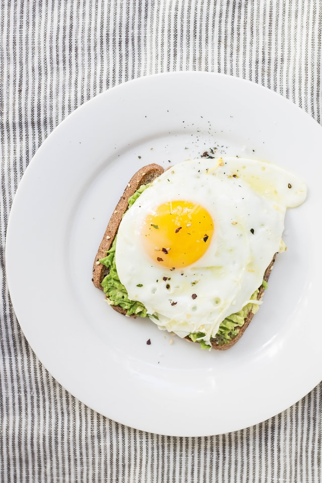

Avocado Egg Toast

Description
This simple filling healthy recipe makes avocado egg toast
in two different ways - fried and scrambled.
Ingredients
- 1/4 avocado seeded and peeled
- 1 slice whole wheat bread
- sea salt
- cracked black pepper
Fried Eggs
Scrambled Eggs
Steps
- Toast bread in a toaster. Place the avocado over the
toast, slice it and mash it on top. Top with eggs
and season with salt and pepper.
- For fried eggs: Heat butter in skillet
over medium-high heat until hot. Crack egg onto skillet and
reduce the heat to low. Cook until whites are completely set
and yolks thickened, approximately 5-7 mminutes.
- For scrambled eggs: Heat butter in
skillet over medium-high heat until hot. Whisk eggs in a
bowl, then pour into center of pan. When edges begin to set,
start to fold the eggs until cooked through, approximately
2-3 minutes.